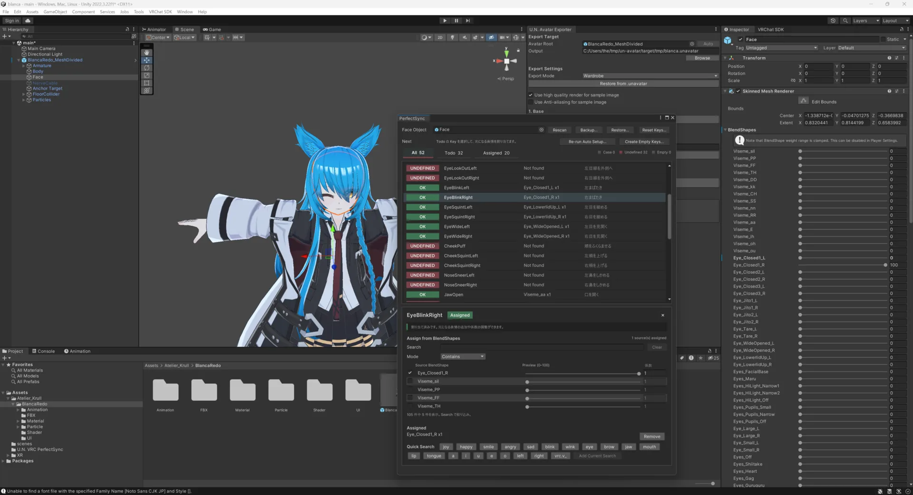
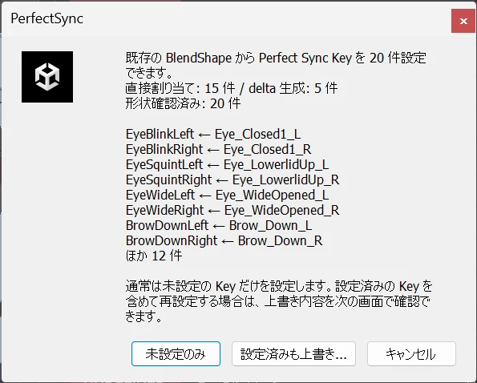
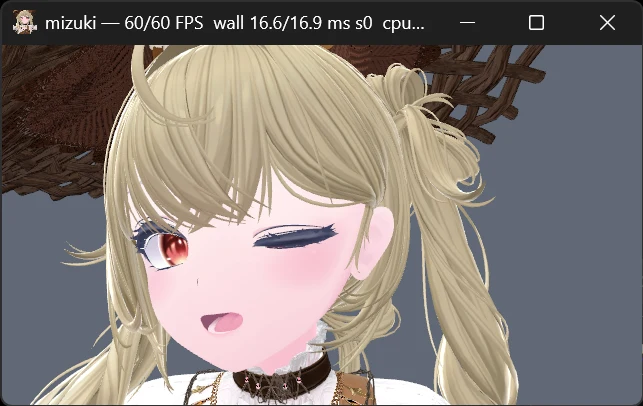
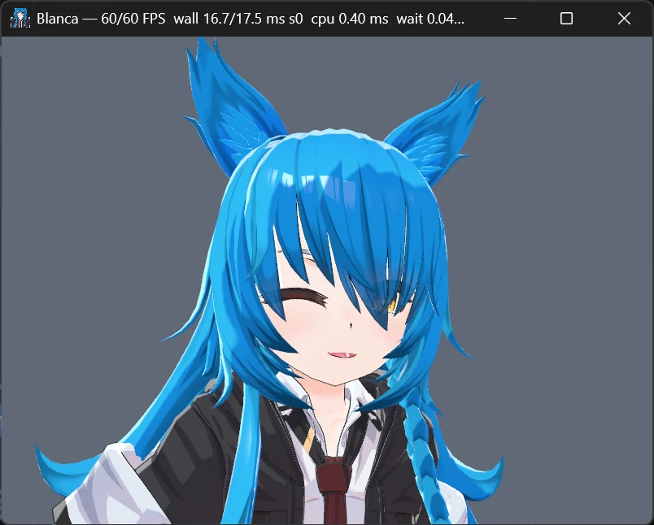

52 Key Audit
OK、UNDEFINED、EMPTY、CASEを一目で確認。
U.N. VRC PerfectSync 1.0.1
既存の表情を、Perfect Sync 52 Keyへ。
VRChatアバターの顔BlendShapeを確認し、Auto Setupと手動割り当てでPerfect Sync向けに整えるUnity Editorツール。
PerfectSync Authoring Window in Unity 2022.3
One authoring window
52 Keyを一覧で確認し、未設定のKeyだけを絞り込み。元になるBlendShapeの検索、プレビュー、係数調整を同じ画面で進められる。

Conservative Auto Setup
BlendShape名、左右、Avatar Descriptor、変形領域を解析。安全に判断できたKeyだけを提案し、直接割り当てとdelta生成の内訳を表示する。

Result
自動設定後もKeyごとの割り当てと係数を調整可能。異なる命名規則を持つアバターでも、元の表情を活かして整えられる。


OK、UNDEFINED、EMPTY、CASEを一目で確認。
検索、プレビュー、複数割り当て、係数調整。
元のMeshを直接変更せず、編集用Assetを作成。
大きな編集前の保存と、全Keyの再設定に対応。
Install
repositoryをVCCへ登録し、対象プロジェクトのManage Projectからインストール。
https://usagi.github.io/un-vrc-perfectsync/vcc/index.json
https://github.com/usagi/un-vrc-perfectsync.git?path=/unity/un-vrc-perfectsync